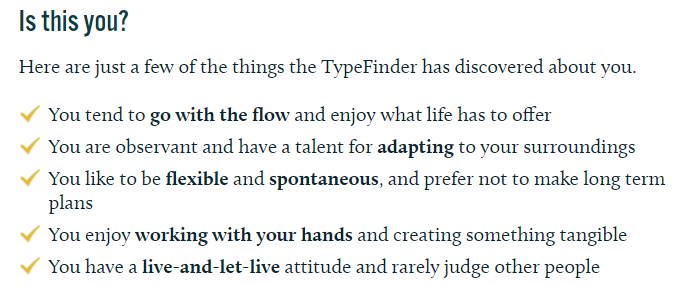

student number: s3941433 student email: s3941433@student.rmit.edu.au

Favorite fruit is the dragon fruit - Favorite animal is the hooded pitohui - Favorite card is El Shaddoll Winda
My Interest in IT is a bit more of a general one. No real major pull towards it. I guess the interest started with my like and usage of games and other applications. The starting point of wanting to learn IT would be a programming course I did in college and it made sense to me.
I chose to “go” to RMIT because it had the general study direction I wanted to go while staying online. Also Open University recommended it to me. Plus my Father is an alumni of RMIT.
What I expect to learn about is what I signed up to learn about. Nothing less, maybe more.
Freelancer or self-employed. While I understand that these two options tend to be more unstable as jobs due to no guaranteed contract, I think it would work better for me. This is for multiple reasons, though can be broken down to two major ones, the first is to do with the group dynamic. While I can work in a group, I would prefer to work in a smaller sized group than a larger, company sized one. Though ultimately if the option was available, working by myself would allow me to feel the most comfortable. The second reason is that making and sticking to a schedule can be difficult for me. This is because of my medical condition. While it is somewhat controllable and predictable, there are days that hit me hard without warning. These can last for half a day to two days. Or if I'm unlucky, a full hospitalization. Because of this, a greater level of control benefits me.
https://www.16personalities.com/intp-personality


https://www.how-to-study.com/learning-style-assessment/quiz-result.asp?sg=1611C2859218E01CC4A8-F489-45D6-9B7A-FA124D0E8BB3CDE7A037-530E-472B-BE7B-9D4B570C91CF34B6DB29-8AC3-44E0-ADAC-C85B76BBDFEC23A2076C-6F48-4724-B15D-F75A6BF43EAA

https://www.truity.com/test-results/tfworkplace/3756/28672688

The idea for my project is an RPG with a “job” or “class” system similar to “Bravely Default”, Though instead of having a main and sub job/class, instead have two jobs/classes that once at max level, can combine into a higher tier job/class. An example would be a warrior and priest becoming a paladin. I wish to allow a greater amount of control of the player character's direction but to allow for some structure for the player to fall back onto. And if possible, to create an experience similar to what Cynthia from pokemon invokes in the games along the way.
Whenever I played games, I would have a greater preference towards the games that allowed for a greater level of customization of the player character and also the party. It’s why I like the ability to choose what role my character will have in a battle. But most games that allow the ability to choose your starting class, only allow you one, maybe two paths that class can follow. I wish for a further expansion of branching paths. Also the feeling that you get when facing Cynthia is both a mix of fear and excitement and I love it.
The main part of my project that I would want to do is an alteration to already existing class/ job systems in turn based rpg’s (role playing games). What I wish to alter is the options to what the player has in regards to their characters abilities in battle. In most rpgs that i have played and seen, the characters usually have a pre assigned job with a pre set path that the job will take. An example would be games like “Final Fantasy 4” where the characters have pre pre-set jobs and skills/ spells that they will learn. Another example would be the “Fire Emblem” series where most characters have a starting job and two options to promote to. A game that is closer to what I have in mind is “Bravely Default” which allows for a main job and a sub job. What I wish to develop is an evolution of that idea. When the player starts the game, they get the choice of a tier 1 job. This can be simple things like warrior or mage. Then later, when they have maxed out the first job, they can choose a second tier 1 job. And once both are at max level, they can be combined into a singular tier 2 job. An example would be that both mage and warrior would combine into either a battle mage or a spell sword. To further expand on that I would also want to implement a third job tier. In order for this to have a true level of freedom that I desire while still having some structure would be to allow every job to combine with each other in the same tier. Though this could be a difficult task, so a limitation to the options for the tier 3 jobs would be the best compromise. With this job system it would not affect only what abilities that the character would obtain. It would also affect the stats of the character from health to damage. Though having uniform stats across each job is not my intention. Rather the job would affect how much of each stat would be raised. For example a warrior would gain more physical stats and a mage would gain more magic based stats. The intended effect would be that the player would have a choice of having a tier 2 battle mage that could either take more damage, or have a greater amount of magical power. With this it would allow for a game with a base structure to give the player freedom. Though a balancing of these classes would be needed in order to make sure that one option is not better than the other. A fine tuning to Make it so that the illusion of options is not present. With this base system in place, I would then make a game around that structure. Design worlds in order to fit the visual style of the jobs. Something more fantasy would likely be the best fit.
The technology needed for this task would be a computer. Most preferably desktop for the main load of the work, with more minor tasks being done on a laptop. The main operating system for the desktop would be Windows, though MacOs can be usable if needed. The initial creation of the game will be done in either rpg maker or unity. Rpg maker because it allows for an easier structure for a beginner to work with. And Unity for later because a future version of rpg maker will be made with unity so the transition would be easier to manage once my skills have developed.
There are multiple skills that would be needed. The first would be project management to better keep things on the right path. The second would be coding to actually build the game, though this can be somewhat substituted with rpg maker. The third would be graphical design. While rpg maker does come with assets that are free to use. Ones personally made for the game would give it a greater sense of character. The first two skills can be learnable, while the second one is also learnable, the ability to outsource the graphics is also possible through commission.
If I can successfully create my idea and project, then it can serve as an inspiration for others to carry my idea. I do not intend to be the next revolutionary in the gaming sphere, I only intend to be a spark of thought that another can take and cultivate into a burning fire. If I am successful, it will allow attention to be gained onto this idea by a larger developer. It will also allow me to act as a launching point for my own career, potentially getting my name out to the public or other developers.